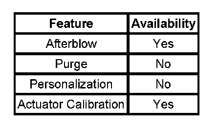

Air Delivery
AIR DELIVERY DESCRIPTION AND OPERATION
The air delivery description and operation is divided into 7 areas:
- HVAC Control Components
- Air Speed
- Auxiliary Air Speed
- Air Delivery
- Auxiliary Air Delivery
- Recirculation Operation
- Automatic Operation
HVAC Control Components
HVAC Control Module

The HVAC control module is a GMLAN device that interfaces between the operator and the HVAC system to maintain air temperature and distribution settings. The battery positive voltage circuit provides power that the control module uses for keep alive memory (KAM). If the battery positive voltage circuit loses power, all HVAC DTCs and settings will be erased from KAM. The body control module (BCM), which is the vehicle mode master, provides a device on signal. The control module supports the features.
Auxiliary HVAC Control Module
The auxiliary HVAC control module is a GMLAN device that receives analog Inputs from the front HVAC control assembly and GMLAN message inputs from the rear seat audio (RSA) control module to maintain auxiliary air temperature and auxiliary air distribution settings. The battery positive voltage circuit provides power that the control module uses for KAM. If the battery positive voltage circuit loses power, all auxiliary HVAC DTCs and settings will be erased from KAM. The auxiliary HVAC control module will perform a recalibration of the electric actuators when commanded with a scan tool or if KAM is lost. This will ensure the actuators are moving with in the calibrated range.
RSA Control Module
The RSA Control Module is a GMLAN device that interfaces between the rear seat passengers and the auxiliary HVAC control module. The battery positive voltage circuit provides power that the control module uses for KAM. Air temperature, blower motor and air delivery rocker type switches are located on the face of the module.
These switches enable the module to send a GMLAN serial data message to the auxiliary HVAC control module for the change request. The module does not store auxiliary HVAC DTCs.
Mode Actuator
The mode actuator is a 5-wire bi-directional electric motor that incorporates a feedback potentiometer. Ignition 3 voltage, low reference, control, 5-Volt reference and position signal circuits enable the actuator to operate. The control circuit uses either a 0, 2.5 or 5-Volt signal to command the actuator movement. When the actuator is at rest, the control circuit value is 2.5 volts. A 0 or 5-Volt control signal commands the actuator movement in opposite directions. When the actuator shaft rotates, the potentiometers adjustable contact changes the door position signal between 0-5 volts.
The HVAC control module uses a range of 0-255 counts to index the actuator position. The door position signal voltage is converted to a 0-255 count range. When the module sets a commanded, or targeted, value, the control signal is changed to either 0 or 5 volts depending upon the direction that the actuator needs to rotate to reach the commanded value. As the actuator shaft rotates the changing position signal is sent to the module. Once the position signal and the commanded value are the same, the module changes the control signal to 2.5 volts.
Auxiliary Mode Actuator
The auxiliary mode actuator is a 5-wire bi-directional electric motor that incorporates a feedback potentiometer. Ignition 3 voltage, low reference, control, 5-Volt reference and position signal circuits enable the actuator to operate. The control circuit uses either a 0, 2.5 or 5-Volt signal to command the actuator movement. When the actuator is at rest, the control circuit value is 2.5 volts. A 0 or 5-Volt control signal commands the actuator movement in opposite directions. When the actuator shaft rotates, the potentiometers adjustable contact changes the door position signal between 0-5 volts.
The auxiliary HVAC control module uses a range of 0-255 counts to index the actuator position. The door position signal voltage is converted to a 0-255 count range. When the module sets a commanded, or targeted, value, the control signal is changed to either 0 or 5 volts depending upon the direction that the actuator needs to rotate to reach the commanded value. As the actuator shaft rotates the changing position signal is sent to the module.
Once the position signal and the commanded value are the same, the module changes the control signal to 2.5 volts.
Blower Motor Control Processor
The blower motor control processor controls the speed of the blower motor by increasing or decreasing the voltage drop on the ground side of the blower motor. The HVAC control module provides a low side pulse width modulated signal to the blower motor control processor over the blower motor speed control circuit. As the requested blower speed increases, the HVAC control module increases the amount of time that the speed signal is modulated to ground. As the requested blower speed decreases, the HVAC control module decreases the amount of time that the signal is modulated to ground.
Auxiliary Blower Motor Control Processor
The auxiliary blower motor control processor controls the speed of the blower motor by increasing or decreasing the voltage drop on the ground side of the auxiliary blower motor. The auxiliary HVAC control module or rear seat audio module (RSA) provides a low side pulse width modulated signal to the auxiliary blower motor control processor over the auxiliary blower motor speed control circuit. As the requested blower speed increases, the auxiliary HVAC control module or rear seat audio module (RSA) increases the amount of time that the speed signal is modulated to ground. As the requested blower speed decreases, the auxiliary HVAC control module or rear seat audio module (RSA) decreases the amount of time that the signal is modulated to ground.
Air Speed - Front Control
The blower control switch is integrated into the HVAC control module. The 2 rocker type switches provide the vehicle operator the ability to select several blower speeds. The HVAC control module uses a bar graph type display to indicate the selected blower speed. The blower motor control processor supplies a 5-Volt reference to the HVAC control module on the blower motor speed control circuit. The HVAC control module pulls the 5-Volt reference low towards ground to provide a blower motor speed signal. As the voltage decreases the blower speed increases. Power and ground are provided to the blower motor control processor through the battery positive voltage and ground circuits. When the HVAC control module is operating in AUTO mode, the system automatically controls the blower speed.
Air Speed - Auxiliary
A rocker type switch on the RSA control module provides the operator the ability to select several blower speeds. The RSA control module uses a bar graph to indicate the selected blower speed. The auxiliary blower motor control processor supplies a 5-Volt reference to the auxiliary HVAC control module on the auxiliary blower motor speed control circuit. The auxiliary HVAC control module pulls the 5-Volt reference low towards ground to provide a blower motor speed signal. As the voltage decreases the blower speed increases. Power and ground are provided to the auxiliary blower motor control processor through the battery positive voltage and ground circuits. The auxiliary HVAC control module can not request A/C operation from the powertrain control module (PCM).
Air Distribution
The HVAC control module controls the distribution of air by the use of a mode actuator. The modes that may be selected are:
- Defrost
- Defog
- Panel
- BI-Level
- Floor
The mode actuator is connected to the mode door by a cam type linkage system. Depending on the position of the door, air is directed through the HVAC module and distributed through various ducts leading to the outlets in the dash. If the HVAC control module detects a fault with the mode door the HVAC control module will try to drive the actuator for a predetermined amount of time, to defrost, which is the defaulted position for the mode door actuator. When the mode switch is placed in the defrost or defog positions the A/C is commanded on and the recirculation door is moved to the outside air position to help reduce window fogging. A/C is available in all modes and recirculation is only available in the panel and bi-level modes.
Mode Actuator
The mode actuator is an electronic stepper motor with feedback potentiometers. The HVAC control module sends signals to the mode door actuator through the mode door control circuit. Zero volts drive the actuator in one direction while 5 volts move the actuator in the opposite direction. When the actuator receives 2.5 volts, the actuator rotation stops. A 5-Volt reference signal is sent out over the 5-Volt reference circuit to the mode actuator. When you select a desired mode setting, logic determines the value of the mode actuator signals. The HVAC control modules software uses this reference voltage in order to determine the position of the mode actuator through the mode door position signal circuit. The motor moves the mode door to the desired position.
Front Defrost
When defrost is selected, the A/C compressor is activated. The A/C compressor clutch will engage when ambient temperatures are above 3°C (38 F). The blower motor will be activated, regardless of the coolant temperature. The HVAC control module will override the auxiliary HVAC control module so a high volume of air is delivered to the front defrost vents. The rear window defogger does not affect the HVAC system.
Air Distribution - Auxiliary Control
The auxiliary HVAC system provides ventilation for the rear seat occupants. The rear seat occupants will exercise control of the auxiliary air delivery modes, air speed and air temperature setting.
When the auxiliary mode switch is toggled, a signal is sent to the auxiliary mode actuator through the auxiliary mode door control circuit. Power and ground are supplied to the auxiliary mode actuator through the ignition 3 voltage and ground circuits.
A rocker type switch on the RSA control module provides the operator the ability to select several blower speeds. The RSA control module uses a bar graph to indicate the selected blower speed.
Recirculation Operation
The HVAC control module controls the air intake through the recirculation actuator. The recirculation switch closes the recirculation door in order to circulate the air within the vehicle. The outside air switch opens the recirculation door in order to route outside air into the vehicle. Regardless of the blower motor switch position, recirculation is available only in the panel and bi-level mode switch positions. Including the OFF position. The mode switch must be placed in either the panel or bi-level position before the blower motor switch is placed in the OFF position. In order to reduce windshield fogging, outside air is circulated when the mode switch is in the defrost or defog positions. If the recirculation switch is pressed into the ON position when the mode switch is in an unavailable mode position, then the recirculation switch LED will flash 3 times. If the HVAC control module detects a fault with the recirc door the HVAC control module will try to drive the actuator for a predetermined amount of time, to outside air, which is the defaulted position for the recirculation actuator.
Automatic Operation
In automatic operation, the HVAC control module will maintain the comfort level inside of the vehicle by controlling the A/C compressor clutch, the blower motor, the air temperature actuators, mode actuator and circulation.
To place the HVAC system in Automatic mode, the following is required:
- The Auto switch must be activated
- The air temperature switch must be in any other position other than full hot or full cold position
Once the desired temperature is reached, the blower motor, mode, recirculation and temperature actuators will automatically be adjusted to maintain the temperature selected. The HVAC control module performs the following functions to maintain the desired air temperature:
Monitor the following sensors:
- Inside Air Temperature Sensor
- Ambient Air Temperature Sensor
- Lower Left Air Temperature Sensor
- Lower Right Air Temperature Sensor
- Upper Left Air Temperature Sensor
- Upper Right Air Temperature Sensor
- Regulate blower motor speed
- Position the air temperature actuator
- Position the mode actuator
- Position the recirculation actuator
- Request A/C operation
Remote Start
Remote Start Activation
The following describes the HVAC control head functionality upon receiving the remote start active serial data message and a power mode status is set to off/awake. The outside air temperature (OAT) sensor on automatic systems, is utilized to determine the moding of the following features: Blower Mode (Bi-level, Floor, Defrost, Recirc and Rear Defrost. These features are determined by the IAT during activation sequence and are maintained for the duration of engine run time. Calibratable temperatures are utilized to provide low, mid and high temperature ranges for the selectable feature. Blower and mode have the range to select any valid feature positions. When the remote start active serial data is received, ignition-OFF loop HVAC algorithms will act the same as if a run power mode was received, i.e. re-calibration, afterblow, ignition-OFF motor positioning etc. The OFF timer and the ignition ON timer have the functionality as in the Run mode.
Remote Start De-activation
When the remote start is exited, GMLAN power mode equals run mode or remote start engine. In the case of automatic settings, the displays will revert to the actual state of operation of the features, on the basis of their normal control algorithms.